8.5 GHz Microstrip Phased Array with Wilkinson Feed
A 3-element beam-steering patch array built up from its parts: a 1-to-3 Wilkinson power divider, an aperture-coupled patch, a delay-line feed network, the integrated array and a side-lobe taper. Designed in Keysight ADS and verified full-wave in Ansys HFSS.
A single patch has a fixed, broad beam. Feeding several patches with equal amplitude and a constant phase step between neighbours tilts the beam without moving anything: this project designs that feed for three elements at 8.5 GHz and checks every block on its own before the whole structure is simulated as one piece.
The work goes from component to system. The divider is designed and laid out in ADS, verified with Momentum and re-tuned in HFSS. The patch is sized from Balanis’ formulas and tuned by parametric sweeps. Delay lines add the phase step. The array is first simulated with ideal port excitations to get a reference, then with the real feed network connected. A final stage tapers the amplitudes to lower the side lobes.

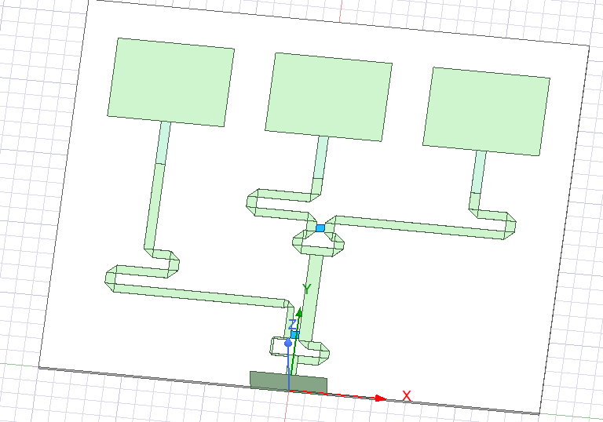
Design values
- Centre frequency f₀
- 8.5 GHz
- Free-space wavelength λ₀
- 35.27 mm
- Substrate
- RT/duroid 5880, εr 2.2
- Thickness, loss tangent
- 0.381 mm, 0.0009
- Copper
- 18 µm
- Reference impedance
- 50 Ω
- Element spacing d
- λ₀/2 = 17.63 mm
- Steering angle θ₀
- 30° from the array axis
- Phase step α
- −155.9°
- Guided wavelength λg
- 24.22 mm
- Delay-line step ΔL
- 0.433 λg ≈ 10.5 mm
How the phase step moves the beam
For a uniform linear array along the x-axis the array factor is largest where the phase added by the feed cancels the path difference between neighbours:
θ is measured from the array axis, as in Balanis. A beam 30° from the axis is 60° away from broadside, which is a large scan for a three-element array: the grating lobe then sits just outside the visible range and its shoulder shows up as a strong lobe on the opposite side. Move the slider to see it grow, then switch the taper: the taper removes the small lobe in the middle, not that shoulder.
This is the textbook array factor of three isotropic or cos ψ elements with equal total input power, drawn on a 30 dB scale. It ignores mutual coupling, the real element pattern, the ground plane size and feed radiation, so it explains the HFSS patterns below but does not replace them. Dashed white: the uniform taper for comparison.
1-to-3 Wilkinson power divider
Three equal outputs are obtained by cascading two two-way dividers instead of building a three-way junction: an unequal Wilkinson (1 : 2) sends one third of the power to the first output and two thirds onward, and an equal Wilkinson (1 : 1) splits that remainder in two. Each output then carries one third, ideally −10·log₁₀3 = −4.77 dB.
The unequal stage uses curved quarter-wave arms to stay compact, and short matching sections at its outputs keep the interface to the second stage at 50 Ω. The connecting lines are meandered so that the three outputs end on one straight line, at least λ₀/2 apart, as the array needs. The layout was simulated in Momentum and placed back in the schematic as an EM block with the lumped isolation resistors.
In HFSS the same layout came out slightly off frequency and unbalanced, as expected when coupling and bend parasitics are solved in full. One parameter, the length of the curved section L_curve2, was swept and set to 2.075 mm, which centres the match at 8.5 GHz and gives the best power balance.
At 8.5 GHz
- Ideal split per output
- −4.77 dB
- Momentum: S21 / S31 / S41
- −5.10 / −4.96 / −5.05 dB
- Momentum: S11
- −16.5 dB
- Momentum: isolation S32, S43
- −29.1, −17.6 dB
- HFSS: S11
- −37.0 dB
- HFSS: S22 / S33 / S44
- −17.2 / −16.1 / −16.1 dB
- HFSS: output isolation
- ≈ −25 dB
- Tuned parameter
- L_curve2 = 2.075 mm

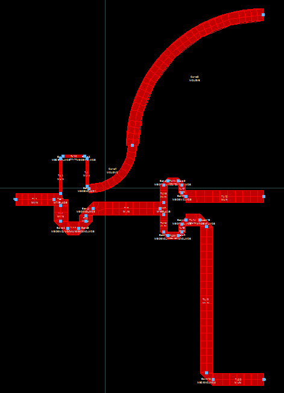

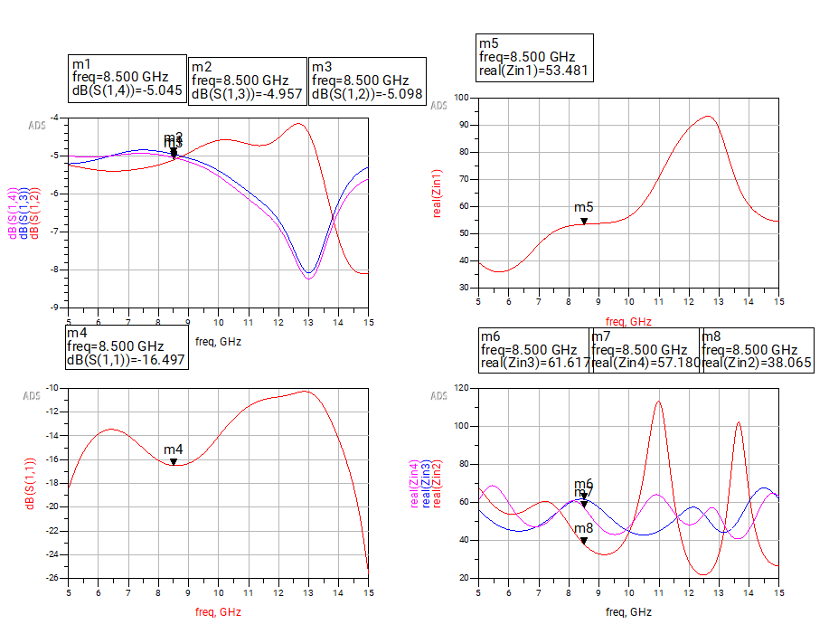

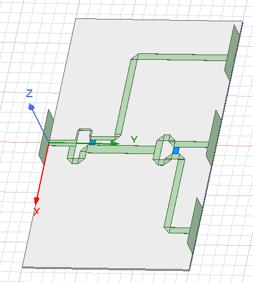

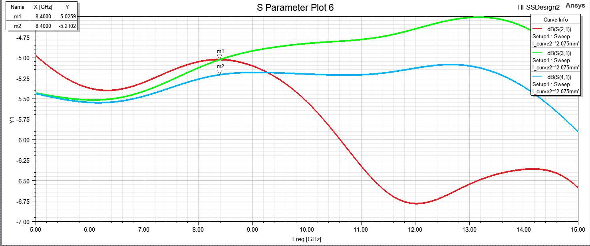

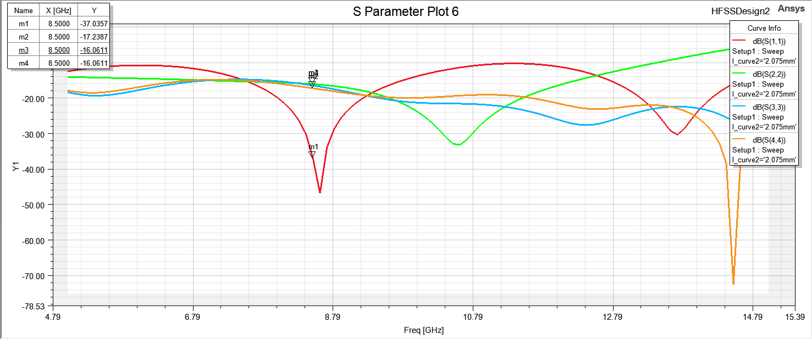

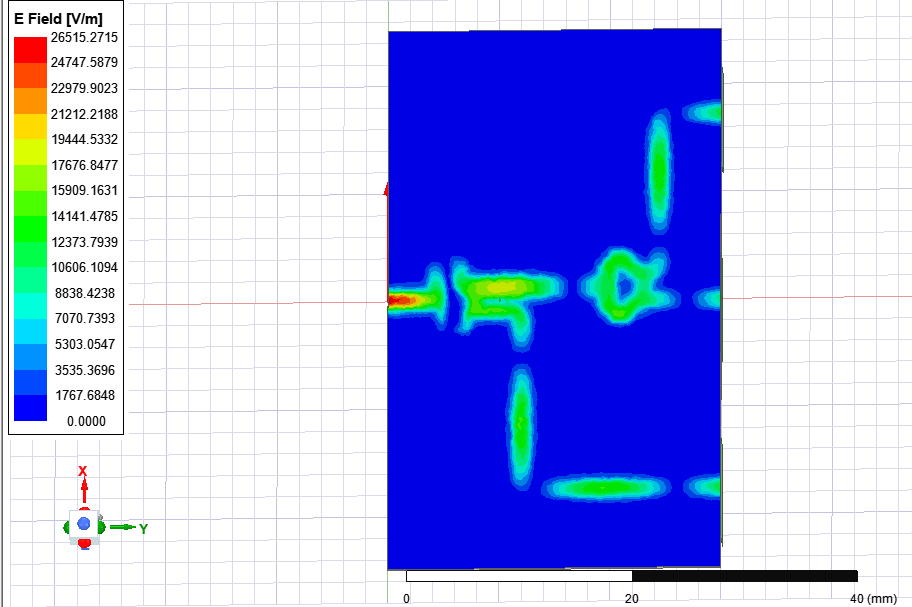
Aperture-coupled patch antenna
The radiator is a rectangular patch fed through a slot. The microstrip feed line is on one substrate, the patch on a second one, and the ground plane between them carries a rectangular aperture that couples the two. This keeps the feed network behind the ground plane, away from the radiating side, and gives three tuning handles: the slot, the stub that extends the feed line past the slot, and the patch itself.
Balanis’ equations for a directly fed patch give the starting size. With those values the first simulation resonated far from 8.5 GHz and did not reach −10 dB, because the slot and the second layer load the patch. Parametric sweeps then showed what each dimension does:
- Patch length Lp sets the resonance: longer means lower frequency.
- Slot length and width set the coupling, and with it the depth of the match and the bandwidth.
- Stub length Lstub cancels the remaining reactance and deepens the S11 minimum.
- Patch width Wp has only a small effect on the resonance.
The requirement was |S11| < −10 dB over a 2 % band around 8.5 GHz. The final design reaches −31.4 dB at 8.502 GHz; the markers on the final plot put the −10 dB band at 8.427–8.574 GHz, i.e. 147 MHz or 1.7 %. The pattern is broadside with 6.63 dBi peak realized gain.
Final dimensions (HFSS project)
- Patch Wp × Lp
- 13.95 × 11.05 mm
- Slot (Ws, Ls)
- 5 mm, 2 mm
- Feed stub Lstub
- 5 mm
- Feed line width
- 1.18 mm
- Balanis start: Lp
- 11.4 mm
Result
- S11 minimum
- −31.4 dB at 8.502 GHz
- −10 dB band
- 8.427–8.574 GHz
- Bandwidth
- 147 MHz (1.7 %)
- Peak realized gain
- 6.63 dBi, broadside

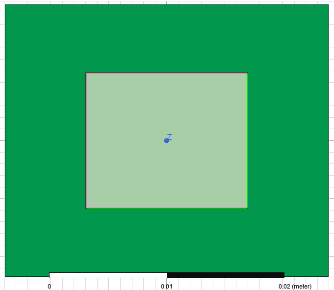

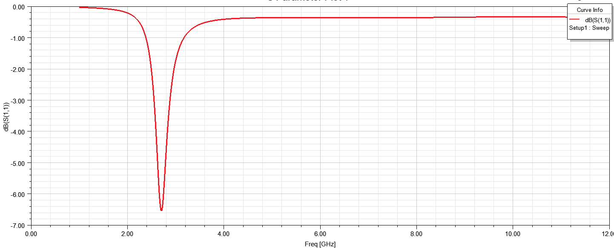

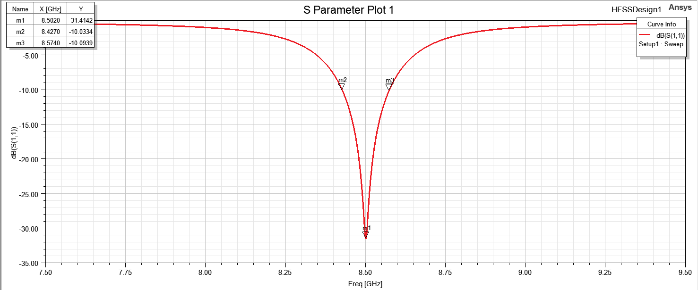

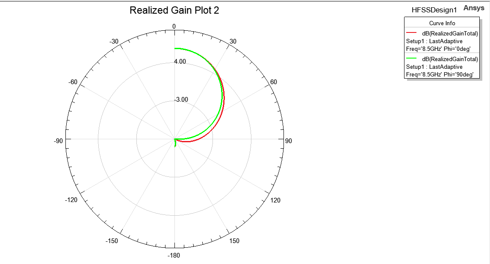

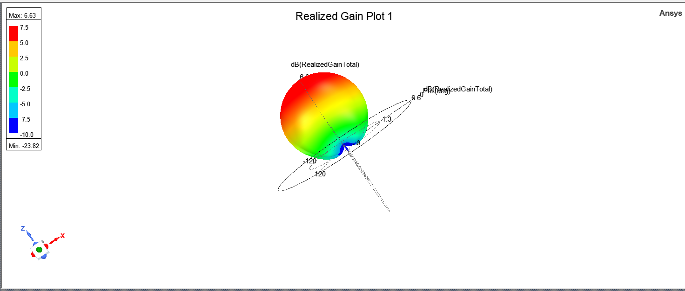

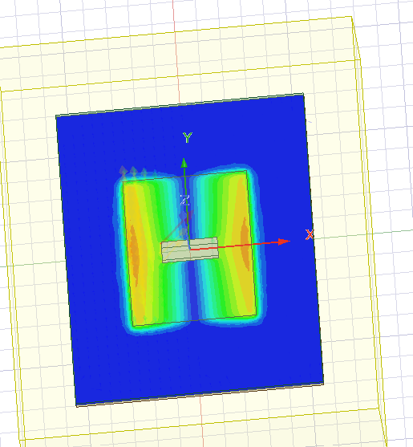
Feed network: divider plus delay lines
The divider already provides equal amplitudes. The phase step comes from extra line length: each output is one ΔL longer than the previous one, so the three paths are L₀, L₀ + ΔL and L₀ + 2ΔL with ΔL = 0.433 λg ≈ 10.5 mm. The extra length is folded into meanders, so the three ports still end λ₀/2 apart.
The line width is kept constant through the meanders, long closely spaced parallel runs are avoided to limit coupling, and all bends use the same corner style.
At 8.5 GHz the three outputs carry −5.12 to −5.20 dB, about 0.4 dB below the ideal −4.77 dB because of conductor and dielectric loss in the longer lines. Their phases are −155.5°, +48.6° and −108.9°: taken in array order, the steps are −155.9° and −157.5° against the −155.9° that was asked for.
At 8.5 GHz (HFSS)
- Input match S11
- −20.7 dB
- Output magnitudes
- −5.18 / −5.20 / −5.12 dB
- Output phases
- +48.6° / −108.9° / −155.5°
- Phase steps in array order
- −155.9°, −157.5°
- Target step
- −155.9°
- Largest phase error
- 1.6°

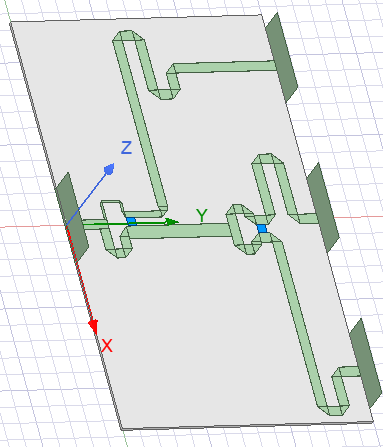

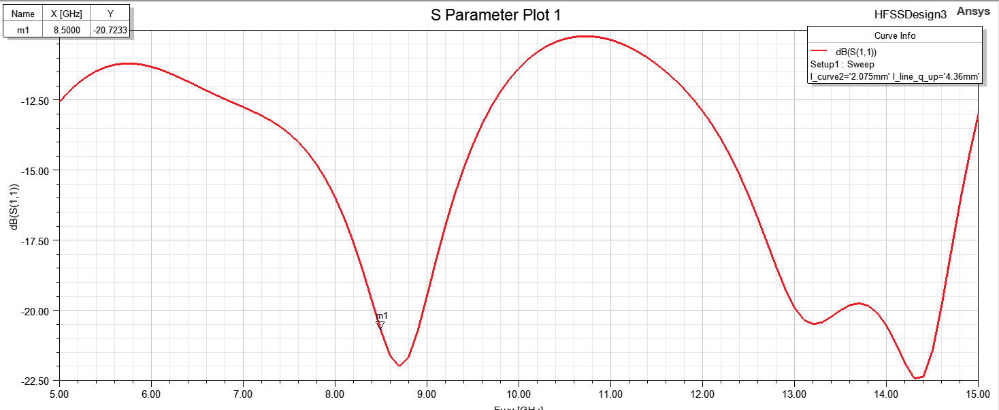

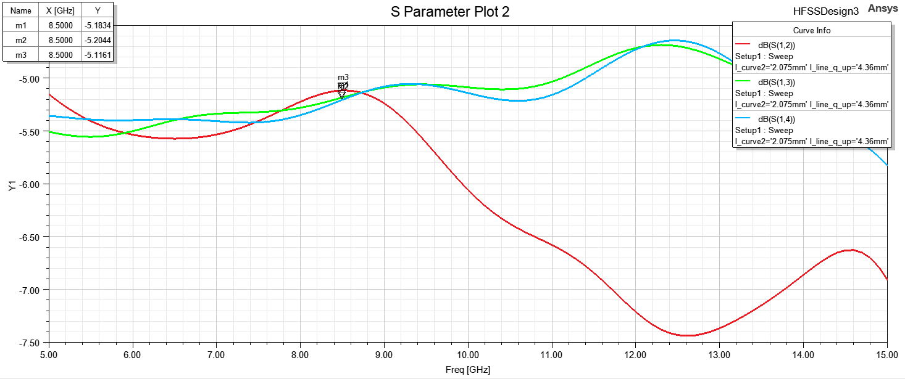

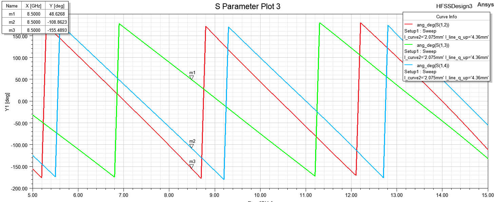
Ideal array: the reference
Before the feed network is attached, three copies of the patch are placed λ₀/2 apart and their ports are excited directly with equal amplitudes and the phases 0°, −155.9° and −311.8°. This shows what the array can do without feed losses and gives the pattern that the complete system should reproduce.
Mutual coupling between the neighbouring patches does not detune them: the active ports stay matched, with a −25.6 dB minimum at 8.513 GHz. The beam tilts to the design direction with 8.11 dBi peak realized gain. With the display limited to −10…+10 dB a second lobe on the other side is clearly visible, as the array factor predicts for a uniform taper at this scan angle.
Ideal excitation (HFSS)
- Port phases
- 0° / −155.9° / −311.8°
- S11 minimum
- −25.6 dB at 8.513 GHz
- −10 dB band
- 8.437–8.585 GHz
- Peak realized gain
- 8.11 dBi
- Gain over one patch
- +1.5 dB

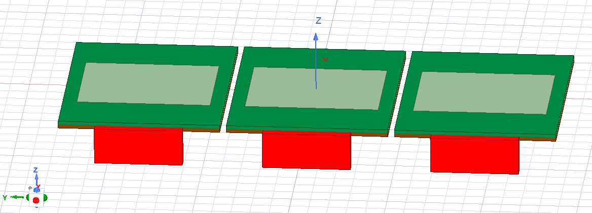

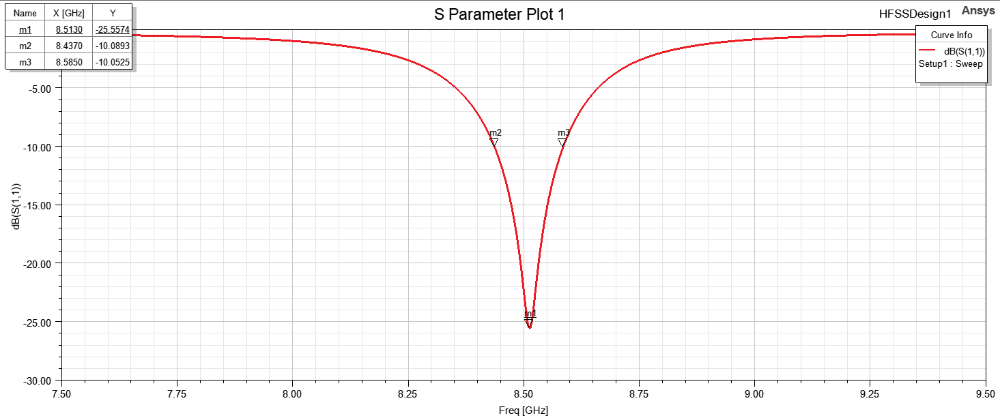

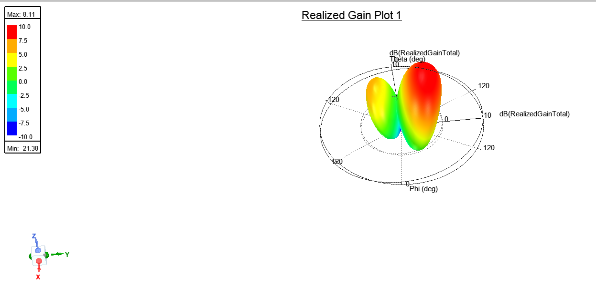
Integrated array with the real feed
The first attempt simply joined the three feed outputs to the three patch feeds. It did not work: the input match was poor, the gain dropped and the field plot showed the wave being reflected where the feed region met the antenna region.
Two changes fixed it. The antenna substrate and ground plane were extended under the whole feed network so that both are continuous, and the radiation box was rebuilt with at least λ/4 of clearance on every side, after it turned out that its distance changed the computed realized gain.
The corrected structure steers the beam to the same direction as the ideal case, with 8.31 dBi peak realized gain. The input match at 8.5 GHz is about −11.5 dB, good enough but narrower than that of the feed network or the patches alone. A little radiation from the feed lines shows up in the pattern.
Complete system (HFSS)
- Peak realized gain
- 8.31 dBi
- Ideal reference
- 8.11 dBi
- S11 at 8.5 GHz
- ≈ −11.5 dB
- Ground and substrate
- continuous
- Radiation box clearance
- ≥ λ/4

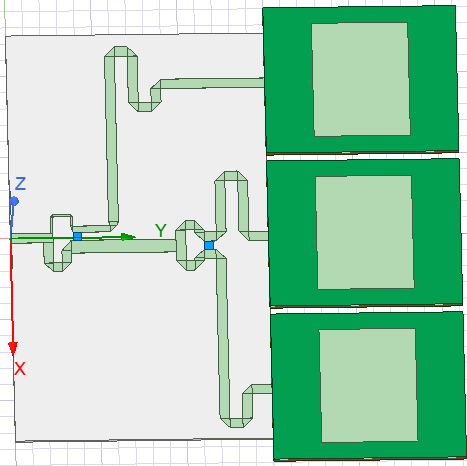

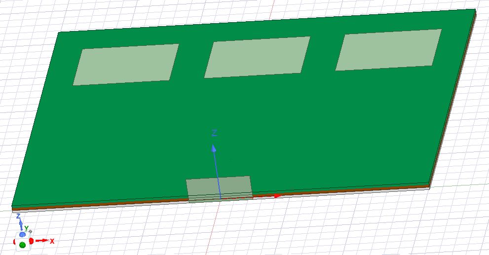

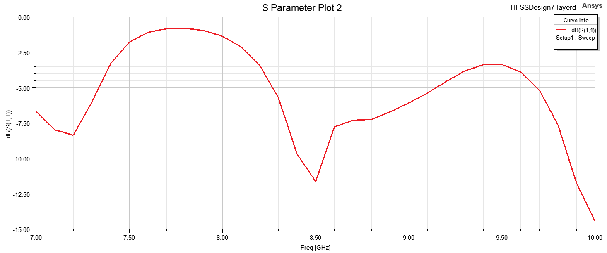

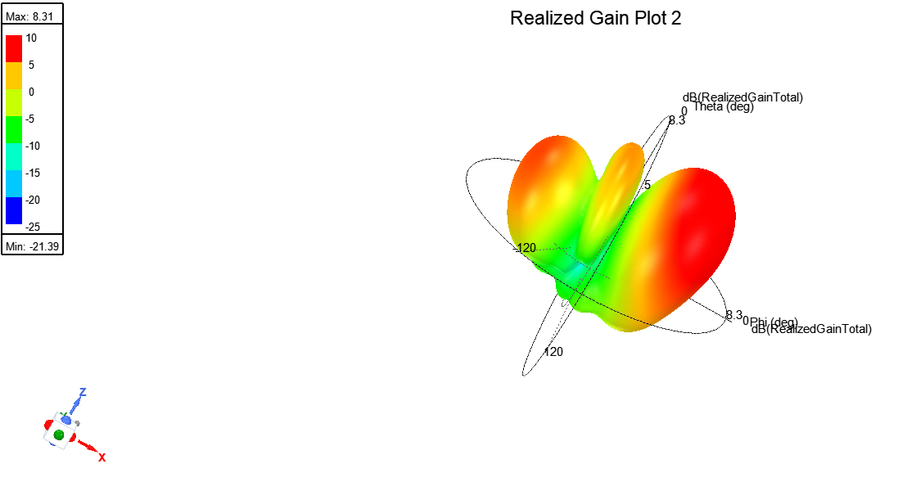

Side-lobe reduction with a Chebyshev taper
Equal amplitudes give the narrowest beam but the highest side lobes. A Dolph–Chebyshev taper puts more power into the centre element: the normalised power weights for this array are 0.5310 for the centre and 0.2345 for each side element, i.e. −2.75 dB and −6.30 dB.
With ideal port excitations the weights cost 0.3 dB of peak realized gain: 8.11 becomes 7.79 dBi.
To build it, the equal divider was turned into an asymmetric one by changing branch impedances and lengths, while keeping 50 Ω ports and the delay lines. The result is an approximation: the centre branch reaches −3.94 dB instead of −2.75 dB, the side branches −6.30 and −6.32 dB, and the input match is −14.3 dB at 8.5 GHz.
Power split at 8.5 GHz
- Target, centre / side
- −2.75 / −6.30 dB
- Built, centre
- −3.94 dB
- Built, sides
- −6.30 / −6.32 dB
- Input match S11
- −14.3 dB
Peak realized gain
- Ideal ports, uniform → taper
- 8.11 → 7.79 dBi
- Built, uniform → taper
- 8.31 → 4.97 dBi


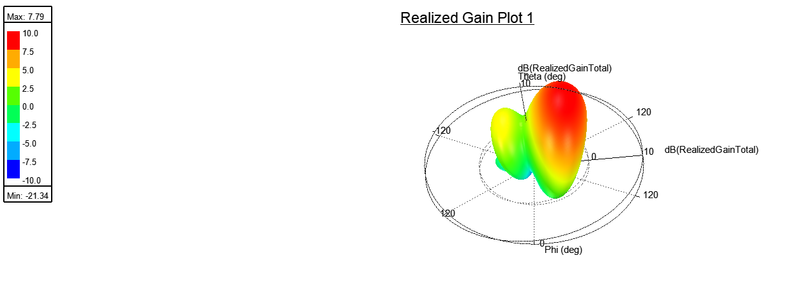

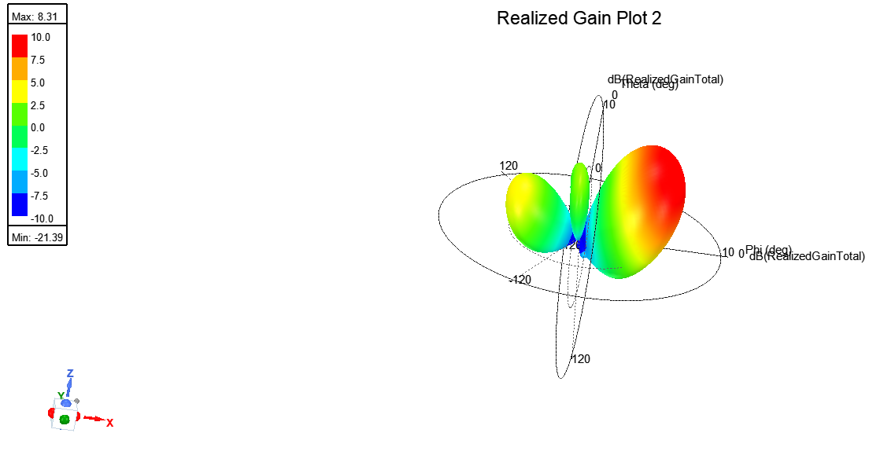

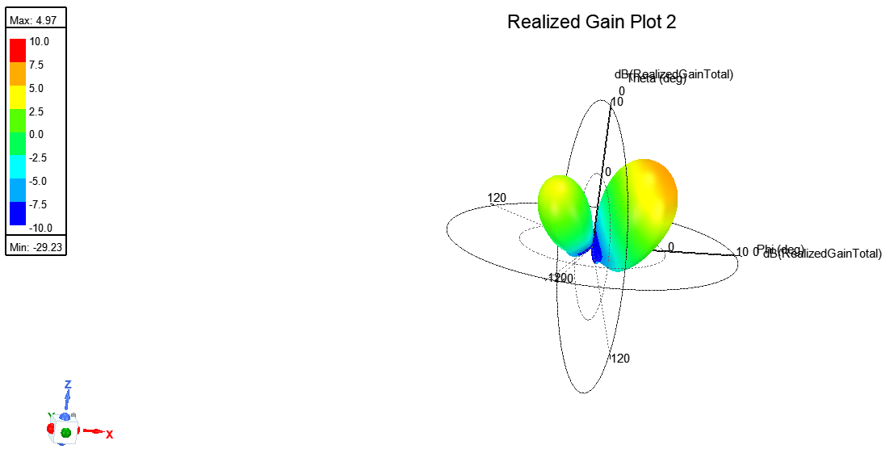

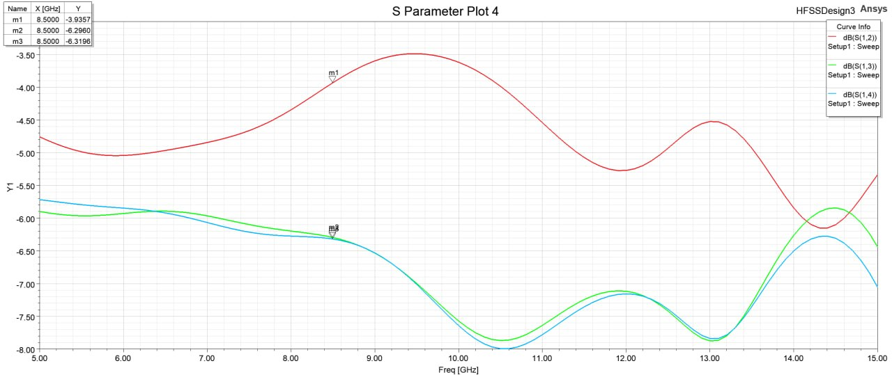

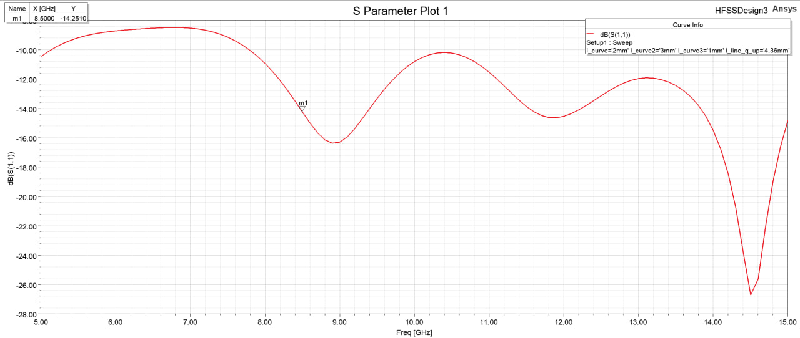
Results at 8.5 GHz
| Block | Quantity | Target | Simulated | Solver |
|---|---|---|---|---|
| Power divider | Split to each output | −4.77 dB | −4.96 … −5.10 dB | ADS Momentum |
| Input match S11 | < −15 dB | −16.5 dB · −37.0 dB | Momentum · HFSS | |
| Output port match | low | −16.1 … −17.2 dB | HFSS | |
| Patch antenna | S11 minimum | < −10 dB | −31.4 dB at 8.502 GHz | HFSS |
| −10 dB bandwidth | 2 % | 147 MHz (1.7 %) | HFSS | |
| Peak realized gain | — | 6.63 dBi | HFSS | |
| Feed network | Input match S11 | < −15 dB | −20.7 dB | HFSS |
| Output magnitudes | −4.77 dB | −5.12 … −5.20 dB | HFSS | |
| Phase steps | −155.9° | −155.9°, −157.5° | HFSS | |
| Ideal array | S11 minimum | < −10 dB | −25.6 dB at 8.513 GHz | HFSS |
| Peak realized gain | — | 8.11 dBi | HFSS | |
| Integrated array | S11 at 8.5 GHz | < −10 dB | ≈ −11.5 dB | HFSS |
| Peak realized gain | ≈ ideal | 8.31 dBi | HFSS | |
| Tapered array | Centre / side power | −2.75 / −6.30 dB | −3.94 / −6.30, −6.32 dB | HFSS |
| Peak realized gain | — | 4.97 dBi (8.31 dBi before) | HFSS |
Values are read from the markers and scales of the simulation plots in the repository; values marked ≈ are read from an unmarked curve. All results are simulations; the array was not fabricated.
What the project showed
- Circuit models are a starting point. The divider that was correct in the ADS schematic had to be re-centred in HFSS with one length; the patch sized from closed-form equations missed the band completely until the slot and stub were tuned.
- The ground plane is part of every microstrip line. The integrated structure failed until the ground and substrate were continuous under the feed and the antennas.
- Simulation settings change the answer. The radiation-box distance altered the realized gain until it was set to at least λ/4.
- A taper is a trade. It removed the inner side lobe but cost gain, more so when built from real line widths than with ideal weights, and it cannot remove the lobe caused by the wide scan angle.